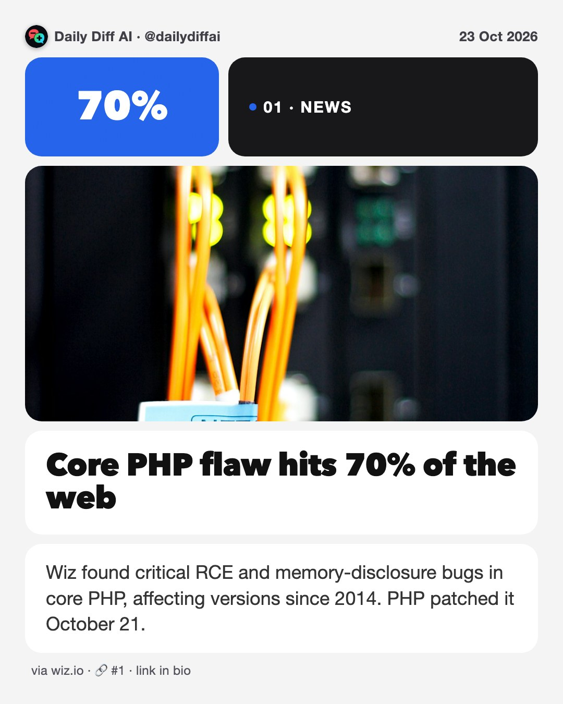
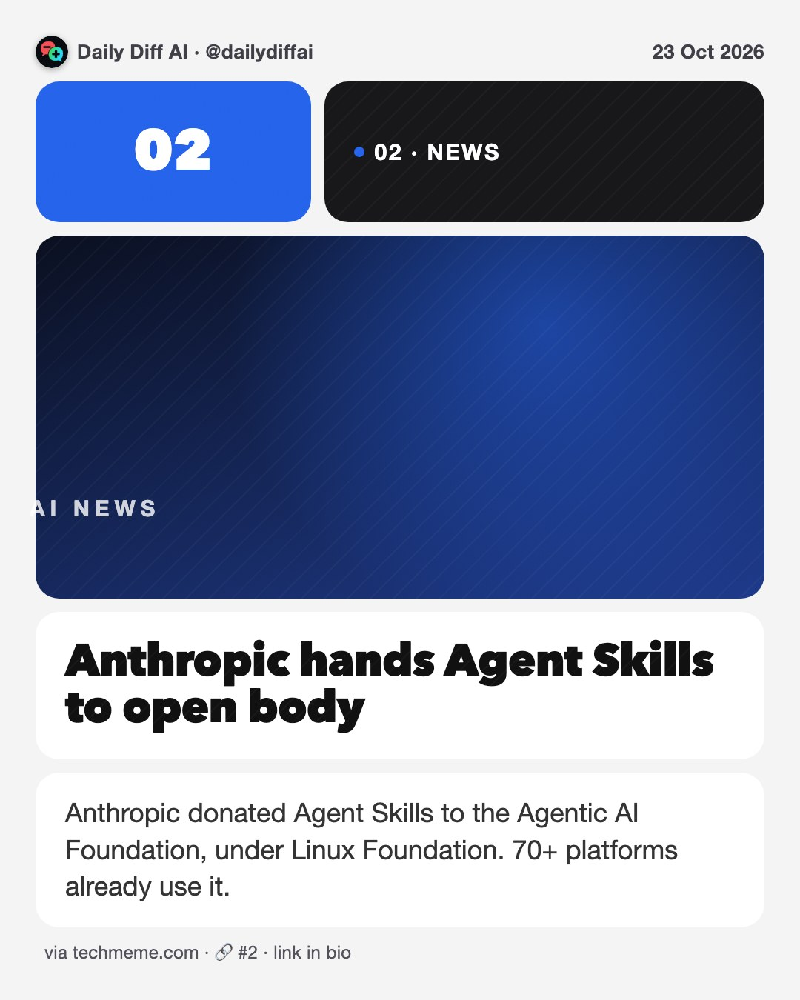
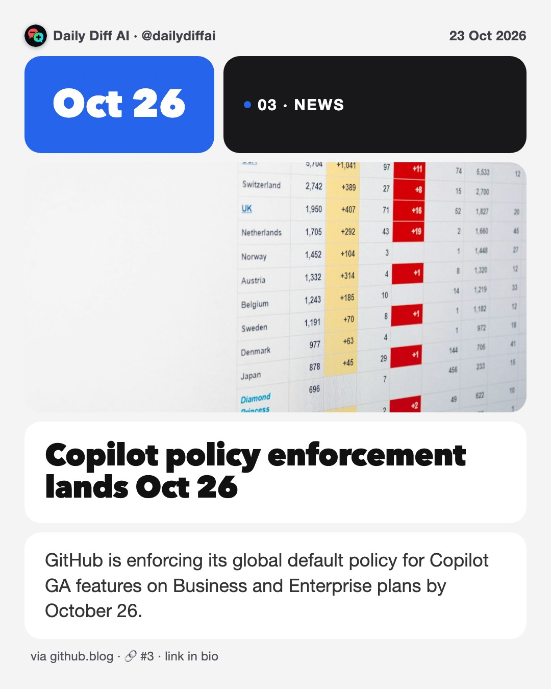
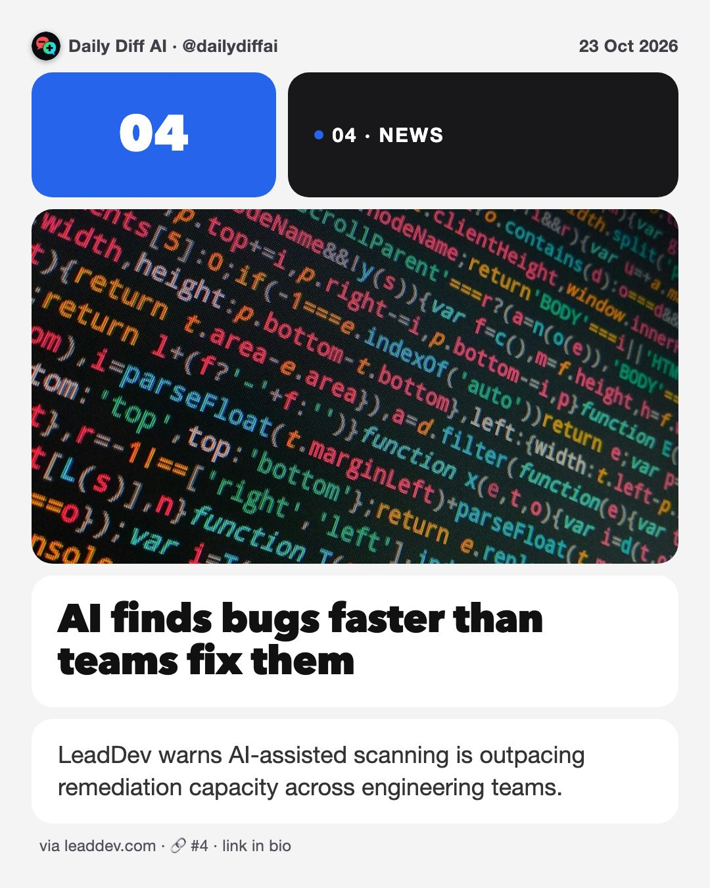
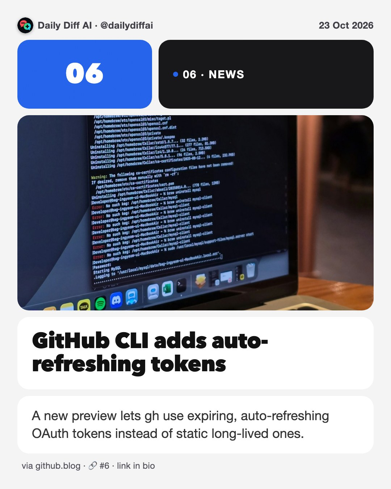
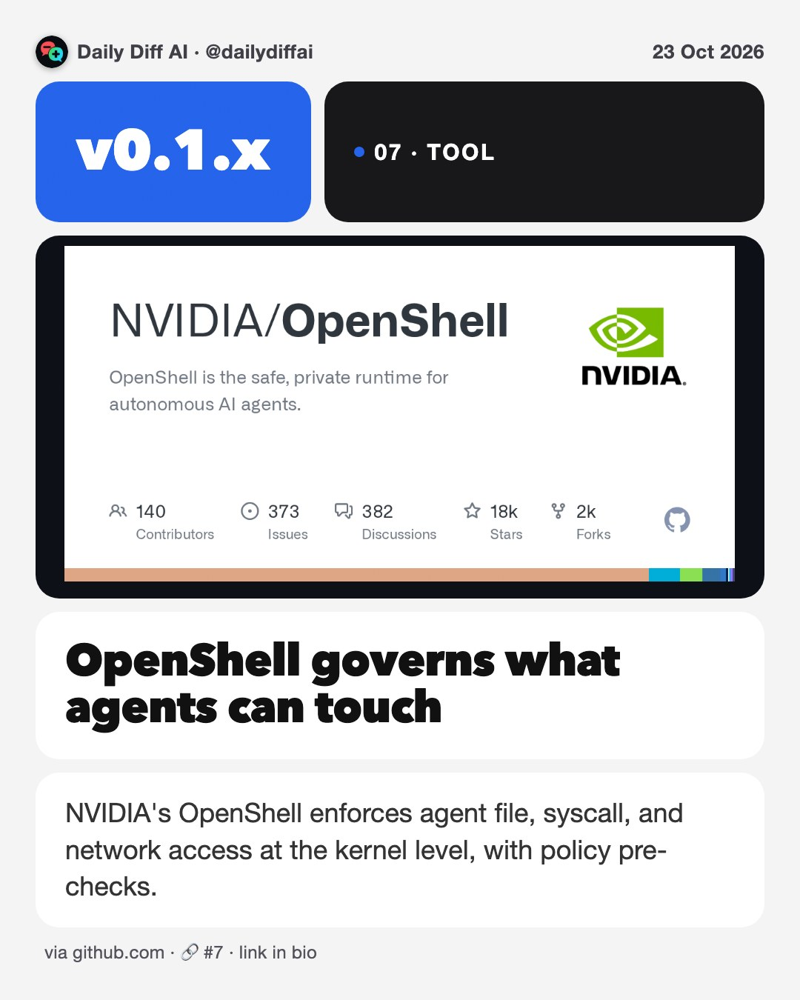
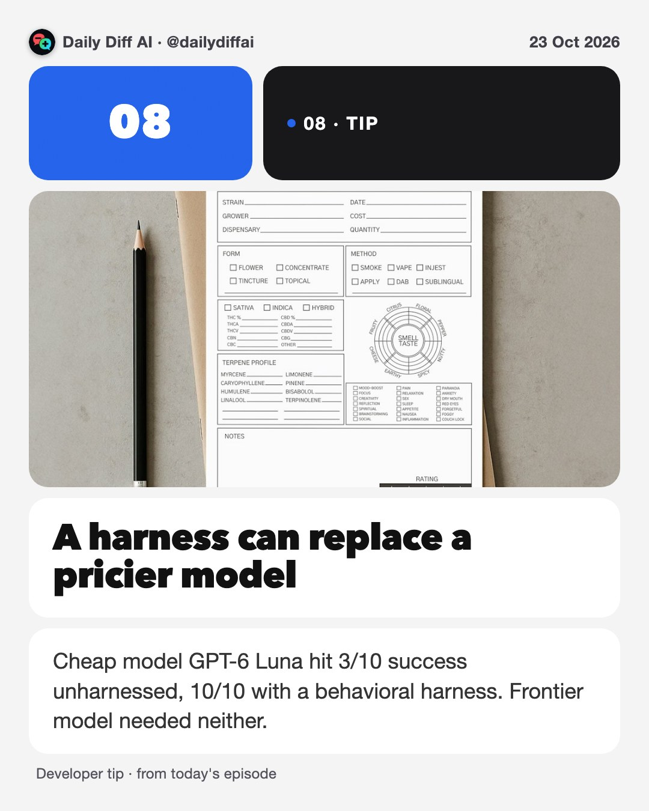

Daily Diff AI

Core PHP flaw hits 70% of the web
Wiz found critical RCE and memory-disclosure bugs in core PHP, affecting versions since 2014. PHP patched it October 21.
Read on wiz.io →
Anthropic hands Agent Skills to open body
Anthropic donated Agent Skills to the Agentic AI Foundation, under Linux Foundation. 70+ platforms already use it.
Read on techmeme.com →
Copilot policy enforcement lands Oct 26
GitHub is enforcing its global default policy for Copilot GA features on Business and Enterprise plans by October 26.
Read on github.blog →
AI finds bugs faster than teams fix them
LeadDev warns AI-assisted scanning is outpacing remediation capacity across engineering teams.
Read on leaddev.com →Kernel bugs leaked to public mailing list
Several Linux kernel vulnerabilities were accidentally posted publicly before a coordinated fix was ready.
Read on phoronix.com →
GitHub CLI adds auto-refreshing tokens
A new preview lets gh use expiring, auto-refreshing OAuth tokens instead of static long-lived ones.
Read on github.blog →
OpenShell governs what agents can touch
NVIDIA's OpenShell enforces agent file, syscall, and network access at the kernel level, with policy pre-checks.
Read on github.com →
A harness can replace a pricier model
Cheap model GPT-6 Luna hit 3/10 success unharnessed, 10/10 with a behavioral harness. Frontier model needed neither.